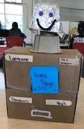

During Interviews, we noticed that a huge problem that a lot of teenagers and even college students have is an embarrassment. As a result of people being embarrassed then it can result in them not using protection if they are sexually active. Which causes all these young people to have STDs such as syphilis. So with our prototype, you will be able to speak to a robot instead of an informed adult if that is a doctor or even your mom, receive valuable information, and a free condom after each session if you would like so if you do decide to become sexually active we encourage it to be safe.
You are probably asking yourself right now well how does "S2D2" work and what is it? Well S2D2 is a mini robot that will give you valuable information, DIAGNOSIS your symptoms, and give you a free condom after each session you have with it. Anyone can talk to it, even if you do not speak English because it will have the feature to change the language to whatever you want or if you don't have STD's, but you still want to talk to it about how to prevent sexually transmitted diseases.
